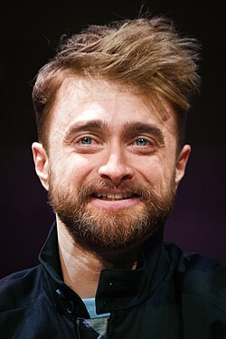

Daniel Radcliffe

Filmes
Harry Potter e a Pedra Filosofal
Harry Potter e a Camara Secreta
Harry Potter e o Prisioneiro de Azkaban
Harry Potter e o Cálice de Fogo
Harry Potter e a Ordem da Fênix
Harry Potter e o Enigma do Principe
Versos de um Crime
Biografia
Daniel Jacob Radcliffe (Hammersmith, Londres, 23 de julho de 1989)[1] é um ator britânico, conhecido internacionalmente por interpretar o personagem-título na série de filmes da saga Harry Potter escrita por J. K. Rowling. Fez sua primeira atuação profissional aos dez anos de idade no telefilme David Copperfield (1999) da BBC, seguido por sua primeira aparição no cinema pelo filme O Alfaiate do Panamá (2001). Aos onze anos, atuou no primeiro filme da saga Harry Potter. Por seu trabalho na série, conquistou diversos prêmios e faturou mais de 54 milhões de libras esterlinas.
Radcliffe começou a ampliar sua carreira como ator em 2007, quando atuou na peça de teatro Equus e na reapresentação do musical da Broadway How to Succeed in Business Without Really Trying, em 2011. Seus créditos na Broadway incluem a peça The Cripple of Inishmaan de Martin McDonagh e o musical Merrily We Roll Along, pelo qual venceu seu primeiro Tony Award. No cinema, seus projetos mais recentes fora do mundo de Harry Potter incluem a refilmagem da adaptação do livro homônimo de Susan Hill, A Mulher de Preto (2012), Versos de um Crime (2013), onde interpretou o poeta beat Allen Ginsberg, o filme de ficção Victor Frankenstein (2015), baseado nas adaptações contemporâneas do romance Frankenstein ou o Moderno Prometeu, a comédia dramática Um Cadáver Para Sobreviver, o filme de assalto Truque de Mestre 2: O Segundo Ato e o telefilme Weird: The Al Yankovic Story, pelo qual recebeu sua primeira indicação ao Emmy.